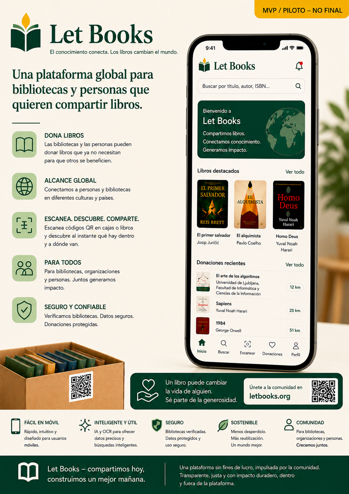

Nota sobre la fase alfa temprana
La documentación, los mockups y los flujos descritos siguen en una fase alfa temprana. El contenido está asistido por IA y puede incluir imprecisiones, detalles provisionales o conceptos de dirección futura.
Let Books ayuda a personas, bibliotecas y futuras organizaciones anfitrionas a catalogar libros valiosos, revisar donaciones y encontrar después exactamente los ejemplares solicitados.

La documentación, los mockups y los flujos descritos siguen en una fase alfa temprana. El contenido está asistido por IA y puede incluir imprecisiones, detalles provisionales o conceptos de dirección futura.
Un mismo título puede tener varias copias físicas, cada una con su estado, ubicación y resultado de donación.
Escanea una caja, ve su contenido, añade libros con rapidez y prepara más tarde la recogida sin adivinar.
Exporta una lista, recoge decisiones como querido o quizá y después genera una lista de recogida por ubicación.
Elige algunos puntos de entrada concretos del blog, el material de aprendizaje y las páginas wiki.
El mayor riesgo a largo plazo en la entrega asistida por IA no es la sintaxis generada, sino las implementaciones que sobreviven cuando el razonamiento que las produjo ya ha desaparecido.
Material de aprendizajeEsta guía explica cómo revisar una implementación asistida por IA comprobándola frente a la especificación del producto, las reglas del flujo de trabajo, la documentación y las expectativas de validación, en lugar de juzgar solo si el resultado parece pulido o técnicamente plausible.
WikiLa QA de traducción combina validación automatizada, corrección ortográfica, revisión terminológica, comprobaciones de accesibilidad y juicio humano.
TemasCómo múltiples etapas de validación reducen distintas clases de error en contenido, salida generada, implementación y workflows de entrega.